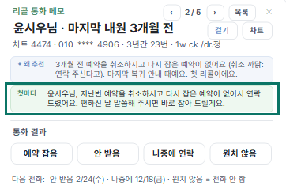

예약 취소 후 다시 안 잡은 분, 2~3개월 안에 꼭 전화하세요
취소하고 다시 안 잡은 분은 보통 2~3개월 안에 꼭 전화하세요. 「나중에 다시 잡을게요」는 대부분 잊어버리신 거예요. 시간이 더 지나면 치료중단 환자가 돼요.
취소는 「안 온다」가 아니에요
예약 취소는 대부분 그날 사정(일·아이·컨디션) 때문이에요. 마음은 아직 우리 치과에 있는 상태라, 먼저 연락만 드리면 다시 잡히는 경우가 많아요.
현장에서는「아, 맞다 다시 잡는다는 걸 깜빡했어요」 하시는 분이 많아요. 오히려 먼저 전화해 줘서 고맙다고 하세요.
언제 거나요
- 취소한 뒤 몇 주 지나도 다시 잡은 예약이 없으면 첫 전화
- 늦어도 2~3개월 안에는 꼭 — 넘기면 다른 치과로 옮기거나 치료를 미루게 돼요
- 취소할 때 「다음 달에 할게요」처럼 때를 말했다면 그 달에(→ 환자가 말한 때)
본인 확인 뒤 그대로 읽으면 되는 멘트○○님, 지난번 예약을 취소하시고 다시 잡은 예약이 없어서 연락드렸어요. 편하신 날 말씀해 주시면 바로 잡아 드릴게요.

자주 묻는 것
예약 취소 환자 리콜은 언제 해요?
다시 잡은 예약이 없으면 2~3개월 안에 꼭 전화하세요. 그보다 늦어지면 치료중단 환자가 되어 돌아오기 어려워져요.
이런 분, 데스크알리미가 매일 골라 줘요
[테마 ▾]의 「예약 취소 후 미예약」을 누르면 취소하고 다시 안 잡은 분만 남아요. 통화 결과를 누르고 [메모 저장]을 누르면 덴트웹 차트에 저절로 적히고, 안 받으면 다음 전화 날도 알아서 잡혀요.
📄 리콜보다 먼저 써 보면 좋은 기능 — 보험서류 5종 한 번에 만들기 →
✔ 덴트웹은 그대로 쓰고 옆에 막대 하나만 · ✔ 덴트웹 기록은 바꾸지 않아요 · ✔ 데스크알리미를 만든 치과 데스크가 매일 쓰는 도구
데스크알리미 = 덴트웹 쓰는 치과 데스크 화면 구석에 뜨는 막대형 도우미예요. 덴트웹은 그대로 쓰고 옆에 하나만 더 띄워요.
올린 날 2026-11-23 · 고친 날 2026-11-23